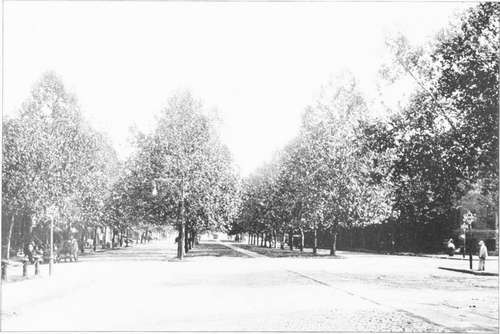
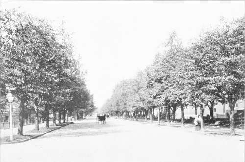

Selection Of Spectes. Part 3
Description
This section is from the book "Tree Planting Streets And Highways", by William F. Fox. Also available from Amazon: Tree planting on streets and highways.
Selection Of Spectes. Part 3
The Common or Yellow Locust is one of our most beautiful trees on account of its profusion of pinnate leaves, and the pendant racemes of white flowers which in June fill the air with an agreeable perfume. The Locust is reputed to be a favorite-nesting place for birds, its spiny stipules furnishing protection from many of their enemies. Prof. Sargent, in his Silva of North America, notes that the Yellow Locust continues to grow until the beginning of autumn, and that the ends of the branches in summer are covered with young light yellow-green leaves which stand out conspicuously against the dark background of the older foliage. This tree grows rapidly, and its size makes it available for streets of medium, rather than narrow width; but owing to the brittle character of its branches it should not be placed where it will be exposed to strong winds. This species has one peculiar advantage as a lawn or roadside tree in that the grass beneath its shade is always green owing to the fertilizing property of its leaves, which like all leguminous plants enriches the soil. But the Locusts have suffered almost everywhere so much from the attacks of insect borers that this liability should be well understood before planting them to any great extent.
Double Row Of Sycamores. — Indiana Avenue, Washington, D. C.
Lindens. — Massachusetts Avenue, Washington, D. C.
Where rapid growth and great size is desired, the Sycamore, or Buttonwood, may claim a place. Its lower branches are high above the ground, affording .111 open space beneath the tree -which is often desirable when planted near a house and furnishing ample shade without obstructing the view of the street or road; but owing to its irregular, inferior habit and liability to fungal diseases, it should be used sparingly in streets or parks, and only where variety is desired. The European Sycamore, or Oriental Plane, which resembles the American species closely, is preferable in every respect, and can be obtained from any nursery. The Sycamore is easily recognized by its peculiar bark, which falls off in flakes from the lower part of the trunk, giving that portion Of the tree a scabby, spotted appearance, while the upper part of the trunk and the blanches are smooth and of .1 creamy white. It is known also by the " buttonballs" hanging from its branches, a drv, globular fruit tilled with seeds, and conspicuous in winter. Tree students, in their outdoor studies, are always pleased to note the conical bud hidden under the base of each leaf stalk and fitting so nicely into the cone-shaped recess in the petiole. It is an interesting tree, and, as found in the lowlands of the Mississippi basin, is the largest of .ill our deciduous species. The Thames Embankment Boulevard, a famous avenue in London, is lined with Sycamores.
Hitherto the American Chestnut has not been planted on our streets or roads; but there is no good reason why it should not be given a place occasionally. It grows very fast, attains a large size, is handsome in form and proportion, and fulfills all the requirements of a first-class shade tree. The boys might prove troublesome when the fruit is ripening; but that is all that can be said in objection, a difficulty easily obviated by a little police work during the short time in which the burs are opening. The Chestnut, too, is not without its claim to beauty. In July its branches are covered with .1 profusion of cream colored catkins that attract the eye and enable one to identify it then, even at a great distance.
The White or Silver Maple is a favorite shade tree in both town and country, surpassing all other species, except the Carolina Poplar, in rapidity of growth. It bears transplanting as well as any other, withstands pruning, and is exceedingly graceful. Its slender, pendant branches are easily swayed by the breeze, giving it a waving, flowing appearance, that is made still more attractive by its silvery hue when agitated by the wind, the under side of the leaves having a whitish color which is then exposed to view. The deeply cleft shape of the leaves adds also to its beauty. Where it is desirable to obtain shade as soon as possible, and at the same time have a beautiful tree, this species should be selected. Of the two soft maples the White is readily distinguished from the Red at first sight by the upward curve of the tips on the lower branches, a distinct peculiarity which adds to the pleasing outlines of this tree.
The Keel Maple is a rapidly growing tree of attractive appearance, the light gray bark on the limbs affording a pleasing contrast to its bright green foliage. In addition to many of the good qualities belonging to the maple it displays a scarlet leaf in autumn, which changes later to a dark crimson. Its foliage is the first to change color, some trees showing their red leaves early in August, and the conspicuous red flowers make it noticeable also in early spring. As it seldom attains its full size when planted in cities it is well adapted to narrow streets.
There seems to be a general prejudice against the Ailanthus, or Ailantus as sometimes spelled; ami yet it withstands the injurious effects of city life better than any other species. It has a peculiar beauty also in the graceful sweep of its large-pinnate leaves, suggestive of the Stag Horn Sumach, which remain green until they fall. Objection has been made to the disagreeable odor of its flowers, but this lasts for only a few days, and can be entirely obviated by planting pistillate trees. The peculiar bark, in which there is traced an arabesque-like pattern, is an interesting study, while the large clusters of reddish bronze samaras on a pistillate tree in autumn make it a thing of beauty and object of enjoyment worth a long walk to see. Brisbin states that it was first introduced in the United States by Mr. William Hamilton, in 17S4, and that a sucker, planted from the original tree in 1809, is at present standing in the Bartram Botanic Garden. In 1820 Mr. William Prince, a nursery-man at Flushing, Long Island, imported the Ailanthus from Europe, and from this stock most of the trees in New York and its vicinity were supplied. Although an exotic it reproduces itself readily, its winged seeds often lodging in the cracks of paved areas, where the young trees may be seen growing in nooks and corners along the house line. The Ailanthus is not only immune from insect blight, but there is no species that can approach it in the ability to thrive in the poor soil and amid the unfavorable conditions of city streets.
The Cucumber Tree is a magnolia of stately growth, with a trunk from sixty to eighty feet in height. It grows rapidly, develops a pyramidal form, and fulfills all the requirements of a desirable shade tree. It is advisable to use a small tree in transplanting. Its common name is due to the fruit, which, when green, resembles somewhat a small cucumber.
Continue to: